01
Why this car
Some projects end with a report. This one does not really end. I bought my E46 in 2018, and since then most of the time I spend with it has gone into keeping it in good shape – and into driving it.
To me it is a piece of art on wheels. I do not have big plans for it; the plan is simply to keep it for as long as possible. The best reward for the evenings in the garage is a drive on a good road, ideally through Switzerland, where I come from, and ideally with the roof down. My favourite road nearby was the one over the Gempen, a small mountain near Liestal. On the way to school I would sometimes take the long way round, just to drive it.
It also has a name: Sunny. I first wanted to call it Ms Daisy, after Logic's song Driving Ms Daisy, but then my mother came up with Sunny – and it simply fit the car better.
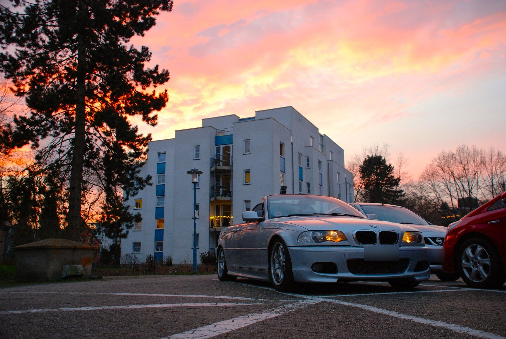
02
What I've done
Sound
- Pioneer head unit
- New speakers from Audio System and Gladen
- Audio System amplifier for the speakers, 1000 W Gladen amplifier for the subwoofer
- Audio System subwoofer in a custom-built enclosure that fits into the old ski-bag opening of the rear seat
- All wiring done myself
Chassis & wheels
- ST X coilovers, lowered by about 30–40 mm
- Original 18" Alpina wheels, manufactured by BBS
Keeping it alive
- Water pump and alternator
- Oil leaks: valve cover gasket, oil filter housing gasket, oil pan gasket
- Driveshaft flex disc
- Crankcase ventilation
- Regular services – and plenty of small jobs I have long since forgotten
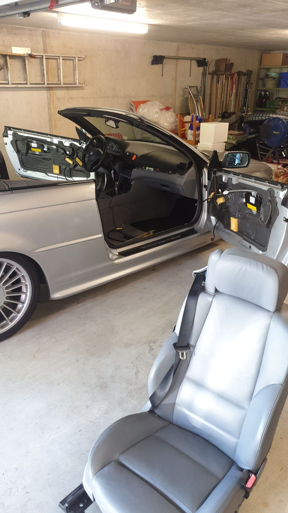
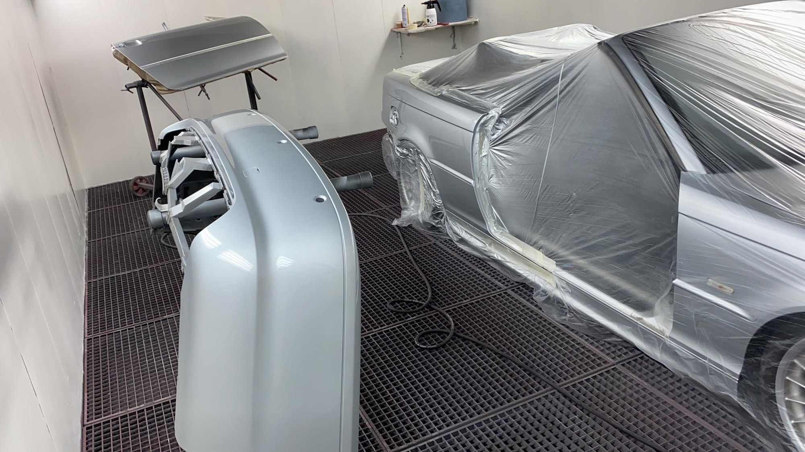
03
On film
Shot on 35 mm film; the car park session below is digital.
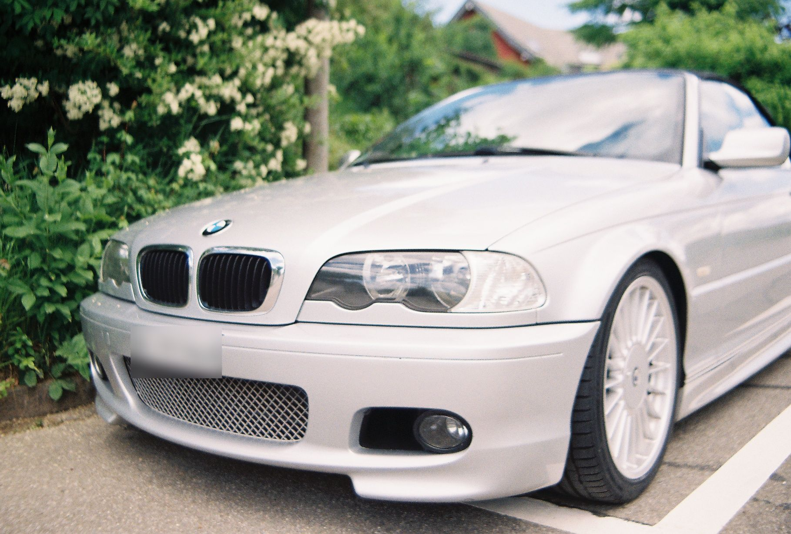
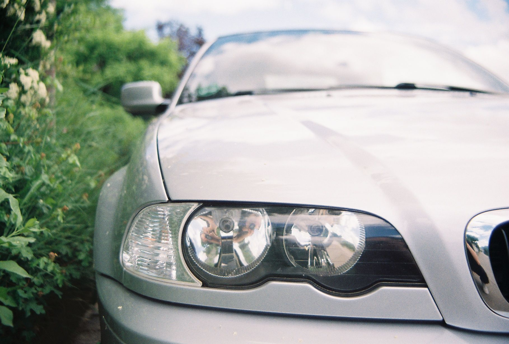
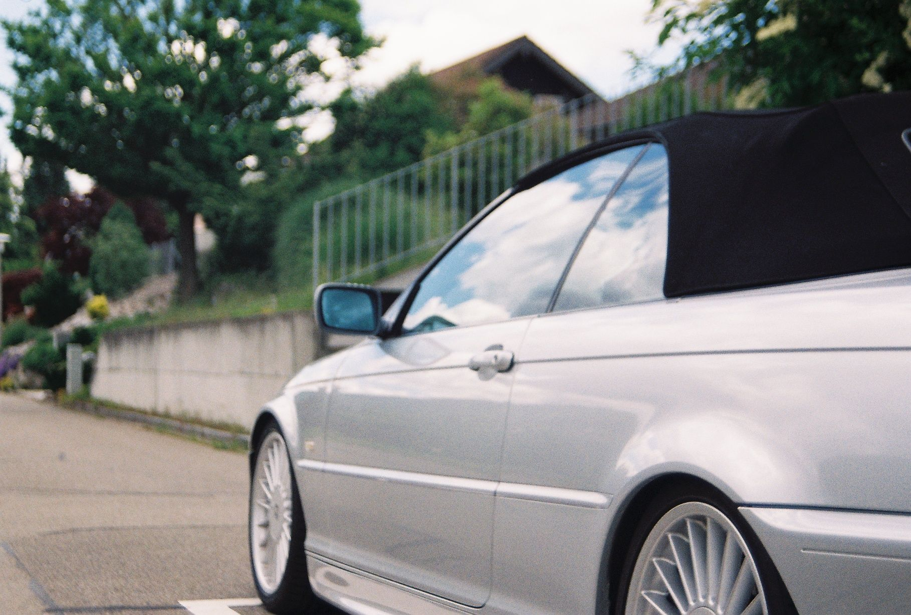
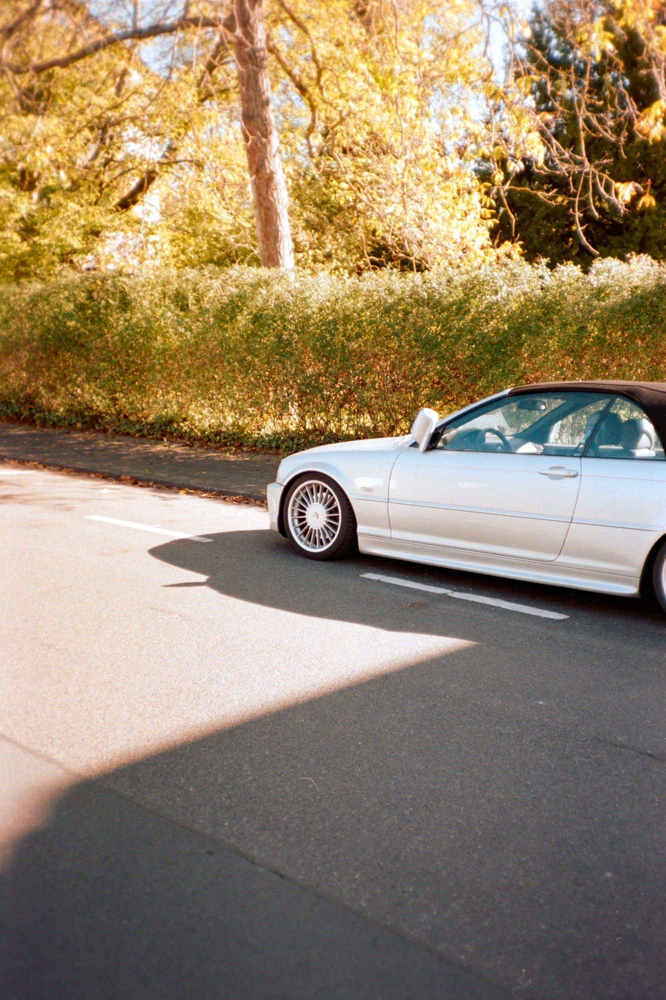
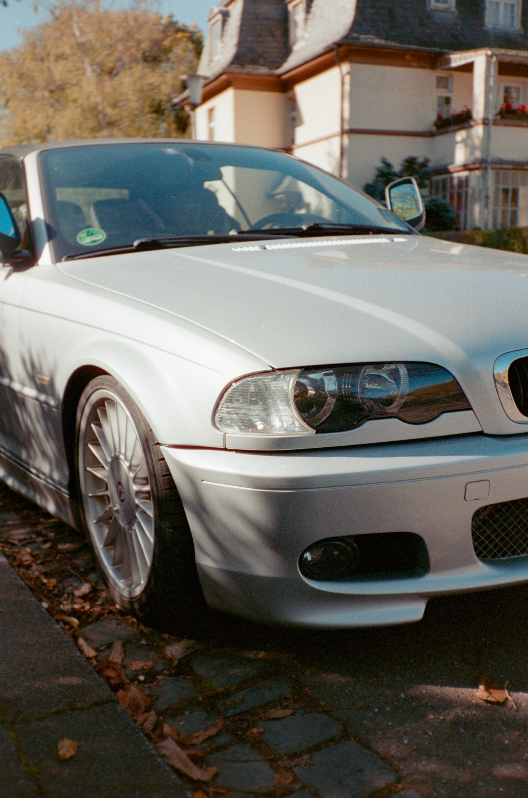
04
Car park session
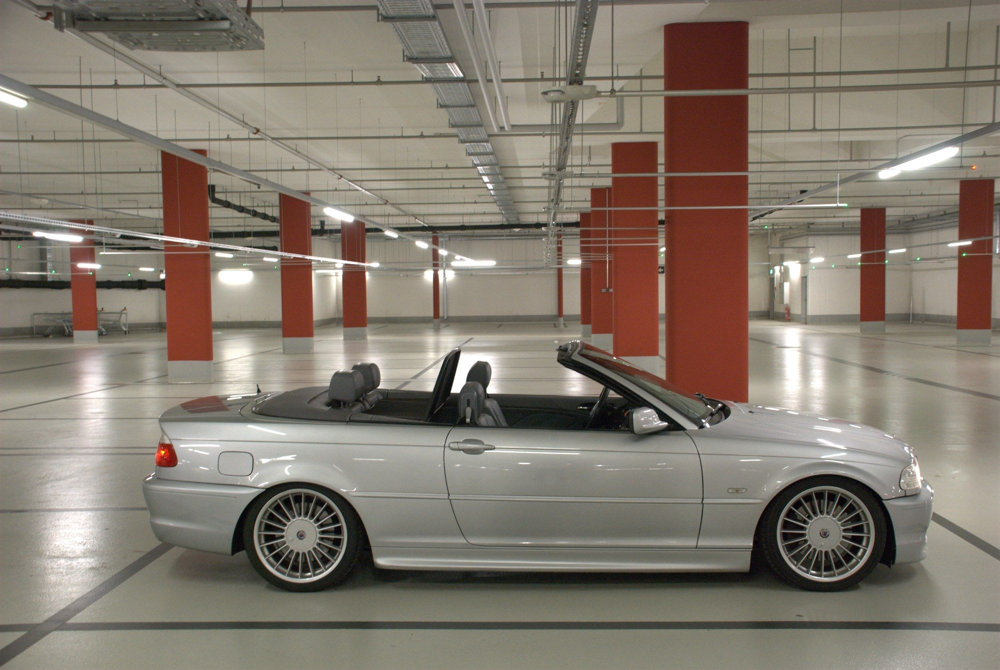
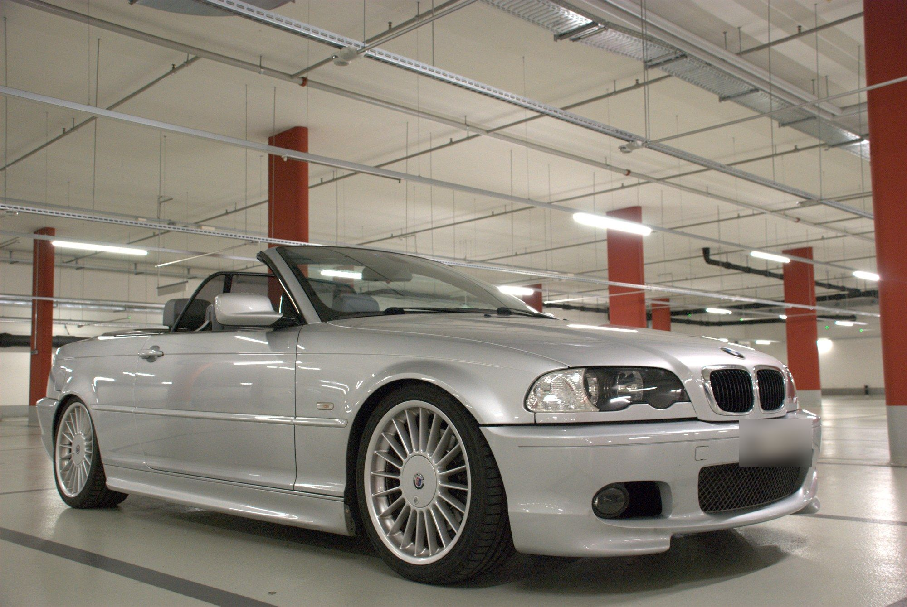
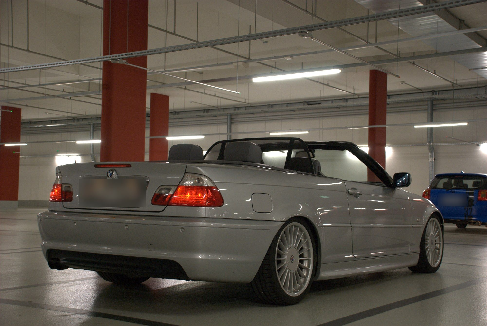